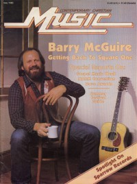

Barry McGuireOn the cover
May 1980
Contemporary Christian Music | Media coverage:- May 1974 in Right On! "A Joyful Noise: Recounting musicians influenced by the Jesus Movement or now doing more gospel music: Larry Norman, Barry McGuire, Noel Paul Stookey, Johnny Cash, Eric Clapton, Tommy James, Billy Preston, Chi Coltrane, Turley Richards", by Paul Baker
- Sum 1975 in Free Love "Bonds of Love", by Pierre Jospeh
- Nov 1977 in Christian Life "Pied Piper to Kids", by Lee Burton
- Jan 1979 in HIS "God, Me, & My Guitar"
- Jul 1979 in Christian Herald "Gospel Artists", by Ron R. Lee
- May 1980 in Contemporary Christian Music "Getting Back to Square One"
- Nov 1980 in Campus Life "Show Time: Music or Message", by Jim Long
- Oct 1981 in Campus Life "Impressions: Barry McGuire", by Jim Long
- 1981 in New Christian Music "Barry McGuire"
- Nov 1981 in Contemporary Christian Music "In Concert: Barry McGuire & Silverwind Aim Straight For The Heart", by Patrick Kampert
- Nov 1985 in Christian Life "They're Singing a New Song", by Patrick Kampert
- Jun 1988 in CCM "Celebrating Our 10th Year: Barry McGuire", by Devlin Donaldson
- Oct 1990 in CCM "In The News: Not Dried Up", by Steve Rabey
- Sep 1993 in Charisma & Christian Life "Jesus People: Where They Are Now", by Nancy Justice
- Apr 1996 in CCM "Rewind: Barry McGuire", by Devlin Donaldson
- Jul 1998 in CCM "Don't You Forget About Me: Barry McGuire"
- Nov 2004 in CCM "List-O-Rama: Saddle Up: 5 Songs That Make Me Think of Cowboys", by Chris Well
- Aug 2007 in Charisma & Christian Life "The Jesus People: Where Are They Now"
- Jan 2011 in Heaven's Metal "Throwing Down the Gauntlet: The Little Things That Matter", by Steve Rowe
Albums & reviews:1965: Eve of Destruction
1980: Best of Barry McGuire
1991: Let's Tend God's Earth
Award Summary (Nominations / Wins)
Dove AwardsPublished articles:1 article credited in Christian Life: 1984.Books about Barry McGuire
- "It's Only Right" in Contemporary Christian Music (Paul Baker, 1985).
- "Talbot-McGuire" in The Encyclopedia of Contemporary Christian Music (Mark Allan Powell, 2002).
- Chapter also includes: Terry Talbot.
- "Barry McGuire" in The Encyclopedia of Contemporary Christian Music (Mark Allan Powell, 2002).
- "Barry McGuire" in The Billboard Guide to Contemporary Christian Music (Barry Alfonso, 2002).
|